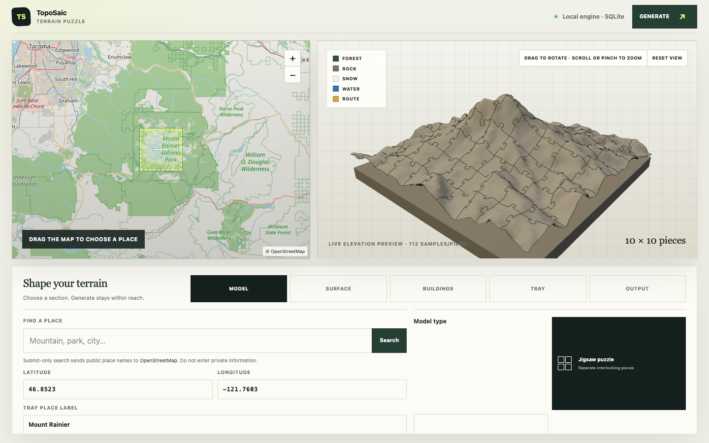
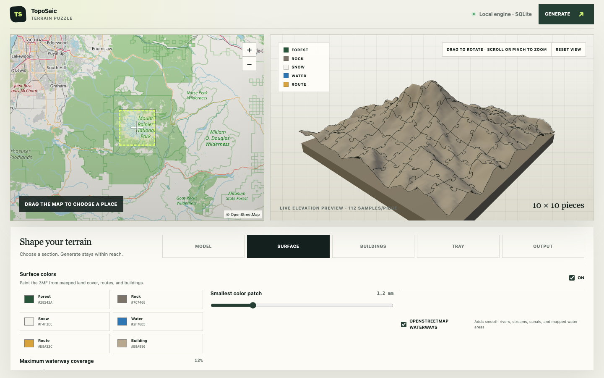

TopoSaic is a local-first topographic puzzle generator. A Rust service samples worldwide elevation data, builds watertight pieces with round jigsaw tabs and sockets, and stores job state in SQLite. The web app lets you choose a place and tune the printable model — mesh detail, surface colors, roads, water, and buildings — beside a live 3D preview.
Free desktop app for Windows, macOS & Linux · no setup, no terminal

Local-first, from map to model. The Rust engine samples global elevation, drapes it in real land cover, roads, and water, and writes watertight meshes straight to your disk — nothing leaves your machine but the public map tiles it fetches.
What it makes
Every model is watertight and drawn from public elevation, land-cover, and OpenStreetMap data — cached locally so repeat tweaks reuse the same download.
Round jigsaw tabs and sockets with narrow-necked knobs, like a standard jigsaw. Layouts run from 2×2 to 16×16 — the default 10×10 makes 100 pieces.
Reads Mapzen Terrarium tiles from the AWS Open Data registry. Elevation, ESA WorldCover, and OpenStreetMap inputs cache under your OS user cache with atomic writes.
A lit height mesh appears after a 64×64 sample settles — drag or use the arrow keys to orbit, scroll or pinch to zoom. A completed job swaps in the detailed mesh.
10 m ESA WorldCover 2021 maps tree cover, bare ground, snow or ice, and water to editable forest, rock, snow, and water colors, stored as standard 3MF triangle colors.
Draws motorway, trunk, primary, and secondary roads as print-safe vector lines, with rivers, streams, and canals flush to the terrain. Bridges deck across ravines instead of dropping in.
Raises OpenStreetMap footprints by tagged height, then floor count, then an 8 m default — with their own editable roof-and-wall material and straight mapped edges.
Exports binary STL and standards-based 3MF with per-triangle colors. Roads rise by one configurable print layer; STL stays single-color but keeps the raised geometry.
SQLite job state, one-request-per-second place search, and a second public Overpass instance on failure. Partial or timed-out responses are never cached.
Surface controls
Overlay detail is separate from the base terrain setting, so roads, buildings, water, and land-cover boundaries get a finer mesh without forcing it on plain terrain jobs.

Three ways to export
Watertight jigsaw pieces from 2×2 to 16×16. Round knobs with narrow necks assemble into the full relief map.
The same mapped relief as one watertight STL and 3MF with a straight outer edge and no puzzle seams, keeping the full sampling grid at a safe mesh detail.
Its own watertight STL and color 3MF: a flat well of smooth equal-height contour inlays, with the place name, latitude, and longitude raised on the front lip in the bundled Atkinson Hyperlegible font.
Get TopoSaic
For almost everyone, this is the way to use TopoSaic: install the desktop app, pick a place, and print a puzzle. It runs the whole engine on your machine — no setup, no terminal, no account. Grab the latest from TopoSaic Releases.
.exe setup · .msi installer
Uses the Universal CRT that Windows 10 and 11 include — no Visual C++ Redistributable. Fetches Microsoft's WebView2 bootstrapper only if the system lacks WebView2.
.dmg disk image · .app.zip
Ships with an ad-hoc signature for now and is not notarized.
portable .AppImage
Make it executable before opening:
chmod +x TopoSaic-*-linux-x86_64.AppImage
./TopoSaic-*-linux-x86_64.AppImageThe desktop app keeps SQLite and generated jobs in its standard application-data directory, and opens a native Save As dialog for every file — it never drops files into Downloads without asking.
For developers
Most people don't need this — download the desktop app instead. The steps below are for developers who want to run or modify TopoSaic. Requires Rust 1.96+ and Node.js 22.13+.
Start the Rust API, then the website in a second terminal:
# terminal 1 — Rust API on http://127.0.0.1:8787
$ cargo run -p terrain-api
# terminal 2 — website on http://127.0.0.1:3100
$ npm install
$ npm run devThe Tauri app starts the Rust engine in-process, so it needs no second terminal:
$ npm install
$ npm run tauri dev # develop
$ npm run tauri build # build installersSet TERRAIN_DATA_DIR to move SQLite and generated jobs off the default data/ directory, and TERRAIN_CACHE_DIR to relocate the downloaded map-tile cache.